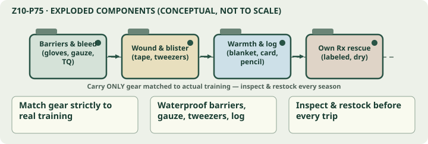

Z10-P75 · Wilderness medicine · New manuscript
Assemble and inspect a training-matched wilderness first-aid kit
Carry practical, unexpired, waterproofed first-aid supplies matched strictly to actual caregiver training and route hazards.
When it applies · Pre-trip kit assembly and seasonal re-inspection for day hikes, backcountry trips, and household go-bags.
Equipment · Waterproof labeled pouch, sterile gauze/dressings, tape, nitrile gloves, trauma shears, fine tweezers, blister tape, emergency blanket, written log card/pencil, and personal prescribed items.

Actions
- Pack supplies you actually know how to use cleanly under stress—prioritizing scene barriers (nitrile gloves), hemorrhage control (sterile gauze, pressure bandage, plus commercial tourniquet if trained), wound cleaning/dressings, blister padding, tweezers, and a waterproof patient log card.[M20, E02, T12]
- Omit surgical scalpels, suture kits, unprescribed prescription drugs, or invasive tools you are NOT clinically licensed and trained to use—untrained gear adds weight and tempts dangerous improvisation.[M20]
- Inspect the entire kit before every season and after every outing to replace used items, verify intact sterile wrappers, discard expired personal medications per instructions, and protect contents in dry waterproof bags.[M20, T12]
Failure recognition · Carrying a dusty five-year-old kit with dried-out tape, cracked gloves, and complex gadgets no one in the party knows how to operate.[M20, T12]
Verify · Confirm every item is unexpired, dry-packed, familiar to the carrier, and matched to group size and trip length.[M20, E02]
Stop or change course · Do not launch remote multi-day travel with an uninspected kit or missing essential personal rescue medications.[M20, T10]
Evidence and editorial notes
- E02 · NPS · Ten Essentials (current web edition)
- Section: Navigation; insulation; emergency shelter; emergency food and water · Conditions: Outdoor trips; adjust kit to season and route
Support: Carry essential systems including navigation, insulation, light, water and emergency shelter.
Limitations: Carrying items without practice or cold-weather verification does not ensure readiness. · Conflicting evidence: None; baseline kit system architecture.
Editorial note: Supports failure-mode packing and kit verification cards. · Specialist reviewer: Field education and search and rescue
Primary source · checked 2026-11-24 - M20 · NIH / MedlinePlus · First Aid Overview (current web edition)
- Section: Lay First-Aid Scope, Kit Readiness, and Documentation · Conditions: Pre-trip kit preparation and remote patient monitoring
Support: Maintain an inspected, unexpired first-aid kit matched to your actual training, keep written patient observations (time, responsiveness, breathing, symptoms, interventions) for EMS handoff, and practice skills in certified courses.
Limitations: Carrying advanced medical instruments without clinical training adds risk rather than capability. · Conflicting evidence: None; aligns with ARC and NPS-K.
Editorial note: Anchors kit sizing, SOAP-style lay observation logs, and scope-of-practice cards. · Specialist reviewer: Wilderness EMS and clinical education
Primary source · checked 2026-11-24 - T10 · FEMA / Ready.gov · People with Disabilities (current web edition)
- Section: People with Disabilities > Make a Plan and Build a Kit · Conditions: Individuals with mobility, sensory, medical, or power-dependent access and functional needs
Support: Build a personal support network, plan accessible evacuation transport, register voluntarily with local emergency registries where available, and plan backup power and spare supplies for medical devices, medications, and service animals.
Limitations: Local registry availability and utility priority-restoration policies vary by jurisdiction. · Conflicting evidence: None; extends generic preparedness plans to accessible requirements.
Editorial note: Directly addresses Z01 accessible emergency planning requirement. · Specialist reviewer: Accessible emergency management and disability preparedness
Primary source · checked 2026-11-24 - T12 · FEMA / Ready.gov · Build a Kit (current web edition)
- Section: Build a Kit > Basic Disaster Supplies Kit and Maintenance · Conditions: Overnight and multi-day emergency readiness
Support: Assemble water, food, light, NOAA/battery radio, first aid, whistle, local maps, sanitation, medications, and backup power; inspect expiration dates and batteries regularly.
Limitations: Standard 72-hour kits do not cover extended multi-day isolation without replenishment or specialized cold/medical items. · Conflicting evidence: None; links kit readiness to periodic maintenance checks.
Editorial note: Supports equipment readiness, inspection, and overnight-emergency cards. · Specialist reviewer: Emergency management and field readiness
Primary source · checked 2026-11-24
Source lineage · NIH MedlinePlus First Aid and NPS Ten Essentials; new manuscript · Classification · New manuscript.